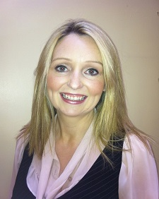
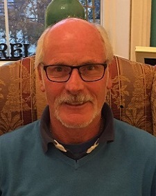

The bWell Clinic Philosophy
On walking through the door, you will know that you are embarking on a positive journey to get you where you want to be, and give you back that feeling of being in control, improving the quality of your life and having a sense of life balance and wellbeing.

About Us Our Team
Allison Keating

Chartered Psychologist PSI (Psychological Society of Ireland)
Registered Psychologist, Columnist, Media Contributor Allison is a well known and respected Registered Psychologist in Ireland. This September 2014 celebrates the bWell Clinic’s 10th anniversary. In conjunction with her busy practice she has been a regular Psychological Media contributor which has lead to being published in some of Ireland's most popular publications and also given rise to a high profile media career.Academic Background
Allison Keating is a Chartered Psychologist of the Psychological Society of Ireland. Training includes an MSc., in Work and Organisational Psychology, BA in Behavioural Science in Psychology, Certificate in Career Guidance and Adult Counselling and is a master Neuro-Linguistic Programming (NLP) practitioner, Life & Business Coach and accredited in EQ-i (Emotional Intelligence). Allison was invited to present her BSc. thesis "Cognitive Dissonance and the Millennium Y2K Bug" at the BRAINSTORM conference in the New York World Trade Centre in 1999. She also was invited to present her research in London to a symposium of Y2K experts. Allison follow the PSI's, Psychological Society of Ireland Professional Code of Ethics and engages in clinical supervision.
Professional Background
Allison worked as a trauma counsellor and placement officer for the FÁS Asylum Seekers Unit processing 256 asylum seekers into training, job placement and helping them through trauma for Asylum Seekers who experienced Post Traumatic Stress Disorder. Allison was asked to participate in the N.D.J.T.I (North Dublin Job and Training Initiative) to assist Ireland's multinationals undergoing major change management and worked with Gateway Ireland (800 employees); Celestica (450 employees) and Aer Lingus (1600 employees) to assist their staff in determining their next career moves and to deal with the transitional stress. From here she financially managed and ran eleven North Dublin disability groups and programmes, namely the N.T.D.I; Prosper Finglas; St. Michaels House and D.E.N. at the CRC through FÁS. Having completed her Psychology undergraduate studies, Allison pursued her Masters Psychology Degree in DCU and produced a highly commended thesis entitled "An investigation into the potential effects of emotional labour on front-line staff", which analysed emotional labour, and how emotional burnout affects employees within the Irish working environment, specifically within the FÁS organisation. Allison was the Career Centre Manager at Diageo Ireland (600 employees) and worked as a consultant implementing the Career Decisions Making Programme. This is a scientifically proven method that was used to aid Diageo employees’ career progression. With the successful completion of that project she was asked to run a pilot programme under the auspices of Northside Partnership, Social Welfare and Career Decisions International called 'Enabled for Life' for people with mental, physical and emotional disabilities with excellent results. Allison ran two of these Enabled for Life programmes and the programme has now become a nationwide programme. Allison decided to establish her own clinic and worked under a franchise agreement for two years. Allison ran "a behavioural Psychology franchise" for two years and in December 2006 opened the bWell clinic. The bWell clinic works extensively with anxiety and panic disorders, relationships, depression and believes in supporting the client to realise their therapeutic expectations into genuine action. I have a major interest in de-stigmatizing mental health in Ireland. I have contributed on Psychological topics on TV3's Ireland AM, running a nine week mental health series that looked at the day to day issues I would work with at the clinic such as Panic attacks, anxiety, depression, eating disorders, phobias, social phobias, stress, family and personal relationships. I ran a ten week Positive Psychology series that looked at resilience, optimism, mindfulness, changing negative thought patterns, and many more. I was in series one and two of TV3's 'How Healthy are you? focusing on anxiety in series one and two and CBT for weight loss in series two. For all interviews and programmes you can access them in the media section. I enjoy contributing evidence based Psychology through the media and it is a personal value of mine to share good information in a time of information overload. With a six part series commissioned by RTE 2 ‘Then Comes Marriage’ myself and Ray O’Neill really enjoyed helping couples with the usual pitfalls of marriage and relationships looking at how money, sex, gender roles, conflict, communications will all present themselves at some point in your relationship. I personally loved putting love and science into bed together as we know from research the things that nurture your relationship and the sure fire relationship wreckers.
Specialities
I work extensively with anxiety and panic attacks and I see it as a hidden epidemic in Ireland. I have been very happy with results generated through innovative Positive Psychology strategies which works on a strengths based model and CBT (cognitive behavioural therapy) which is a solution focused therapy. I also integrate Psychodynamics to understand how your earlier relationships may still be impacting your current behaviour(s) which lends itself to a very well rounded approach to helping you on your therapeutic journey with progressive, research driven, empathic and solutions focused therapy. The ethos of the bWell Clinic is Your Happiness and to surpass ethical and professional standards of excellence. Showing the client how to become happier and healthier and changing the therapy process into an enjoyable transition from where you are now to where you want to be. The mission statement of the bWell Clinic is to create a more authentic happiness and quality of life in all of our clients and to show them how to tap into their own potential, now and in the future. To equip the client with skills and techniques that can be used in a practical sense in everyday life. Our solution focused therapy works excellently with a psychodynamic methodology and we look forward to meeting and helping you, Allison
A bit about me
I am from Malahide, I am very grateful to be near trees, the castle, the beach and playground (not for me!). Sometimes a good walk to blow away the cobwebs down by the breezy beach and having a laugh are a great antidote to the good life. I am very lucky to have three sisters and super parents. Myself and Thomas can’t quite believe that we will celebrate our ten year wedding anniversary this year. We live and breathe our three gorgeous girls with lots of love and many sleepless nights! I love Psychology, I love how research can be applied to your daily life to make it one of great worth and purpose to you. We live in a time of so many great minds and thinkers and with unprecedented access to these people I feel there is so much opportunity within our grasp. I have always been fascinated by people and how they think, and this has only increased with being lucky enough to share in people’s deeply personal therapeutic journey. I thank all my clients for what they have shared with me, and I am humbled by the strength of the human spirit every day. It is with great pleasure that we extend a warm welcome to you on you on your personal journey
Marie Power
Registered Psychologist Academic Background: Marie holds a Masters in Work and Organisational Psychology from University College Dublin, as well as a BA in Psychology, BA in Counselling and Psychotherapy from Dublin Business School and a Professional Certificate in Cognitive Behavioural Therapy from PCI College and is also a Life and Business Coach. Marie follows both the PSI's, Psychological Society of Ireland Professional Code of Ethics
and the IACP Irish Association of Counsellors and Psychotherapists Code of Ethics and engages in ongoing clinical supervision to ensure that her clients are provided with the best possible care. Professional Background: Marie has worked as a work and organisational psychologist for over 10 years. During this period she worked as a Senior Consultant for RSM Tenon, Farrell Grant Sparks and the Great Place to Work Institute providing leadership development coaching and learning support to the Top 100 companies in Ireland in both the public and private sector. She also works as Talent and Development Specialist for Vodafone Ireland providing career guidance and coaching for talent at all levels in organisation from graduate to Director. In terms of Counselling experience Marie started her career in Jigsaw Community Counselling in Belfast (between the Shankill and Falls Road). There she worked with clients presenting with everything from Post Traumatic Stress disorder, sexual addiction, depression, anxiety, eating disorders, bereavement to relationship breakdowns. During her time here she wrote her thesis which was focused on the intergenerational impact of Post Traumatic Stress Disorder in Northern Ireland earning her a first class honour. From there Marie went on to practice counselling and psychotherapy support for Irish Autism Action, in particular providing supportive counselling for parents whose children had recently been diagnosed with Autism, Asperger’s and/or Dyspraxia. From there she went on to practice in Greystone Counselling with a varied case load. Most recently she undertook a Professional Certificate in CBT (Cognitive Behavioural Therapy) and works in a integrative fashion using tools and techniques from the different therapeutic schools depending on the presenting issue. She has a particular interest in positive psychology, stress management and mindfulness. Marie is delighted to join Allison as a therapist in the bWell Clinic.
Donna Redmond
Registered Psychologist, Columnist, Media Contributor Allison !!! is a well known and respected Registered Psychologist in Ireland. This September 2014 celebrates the bWell Clinic’s 10th anniversary. In conjunction with her busy practice she has been a regular Psychological Media contributor which has lead to being published in some of Ireland's most popular publications and also given rise to a high profile media career.
Sarah McNamara
Sarah has over 22 years of experience post graduation working within a wide range of clinical settings including St. James’s Hospital, CAMHS, Stewart’s Care, CRC and HSE. She comes to the clinic with a First Class degree in Psychology from Trinity College Dublin, a PhD in mental health from Oxford University and Clinical Psychology training through the Psychological Society of Ireland. She has published several books in the area of mental health in young people.
Pat Kavanagh

MIACP (Irish Association for Counselling and Psychotherapy)
Pat has over fifteen years’ experience as a counsellor, psychotherapist and stress management therapist. His therapeutic approach is person-centred humanistic integrative including CBT. Areas of expertise include; Bereavement and Loss, Suicide Prevention and Postvention, Relationship issues, Stress Management, Addiction Issues, Career Change, Confidence Building, Workplace Conflict, Bullying & Harassment, Interview Skills, Spirituality.Professional Background
Pat has over fifteen years’ experience as a counsellor/ psychotherapist/ stress management therapist. His therapeutic approach is person-centred humanistic integrative including CBT. Areas of expertise include; Bereavement & Loss, Suicide Prevention & Postvention, Relationship issues, Stress Management, Addiction Issues, Career Change, Confidence Building, Workplace Conflict, Bullying & Harassment, Interview Skills, Spirituality. Pat also provides psychological services for the corporate sector through Employee Assistance Programmes (EAP) for employees. The EAP service includes critical incident response work, responding to unexpected (usually traumatic) events as they arise and assisting clients (individuals and groups) to deal with the issues involved. Pat also works in a consultative capacity in the design, development and delivery of training initiatives in the corporate and public sectors. These programmes include; Dignity at Work, Bullying and Harassment, Stress Management, Humanistic Psychology and Interview skills. Pat also provides a mediation role for corporate clients if they require external expertise in dealing with complaints of bullying and harassment and conflict in the workplace.
Education
- 2015-2016 Diploma in Clinical Supervision
- 2015 Advanced Cert in Group Crisis Intervention (CISM)
- 2008 B.Sc. (First-class Hon’s) in Counselling & Psychotherapy - Middlesex University
- 2007 Diploma in Counselling & Psychotherapy – PCI College
- 2005 Certificate in CISM (Critical Incident Stress Management) Individual & Group
- 2004 Certificate in Drugs Awareness – Community Drug Team (Inchicore)
- 2003 – 2004 Certificate in Bereavement Support - Bethany
- 2002 Certificate in Bullying & Harassment Training – CRMC/RTE
- 2001 – 2002 Diploma in Stress Management - Walmer College
- 2000 – 2002 Preparing for Ministries course - All Hallows College
- 2000 - 2001 Suicide Bereavement Postvention - Dóchas/PCI
- 1999 - 2001 Certificate Course in Counselling - NUI Maynooth
- 1997 - 1999 Diploma in Education and Training - NUI Galway
Clinic Gallery


FAQ Frequently asked questions
Contact Us
Location
The bWell Clinic is located at No 12 St James Terrace, Malahide in a beautifully restored listed Georgian building in the heart of Malahide Village. The clinic is parallel to Malahide Tennis Club. We are literally a few steps from Malahide Estuary which gives an immediate feeling of calm and relaxation that is reflected in the spacious and beautiful therapy room. It is part of the bWell Clinic’s ethos to provide therapy in a deeply therapeutic space. Where you feel safe, nurtured and minded.
Directions
On arriving into Malahide Village, drive through the lights at the cross roads and head in the direction of the Grand Hotel. You will pass a road called Townyard Lane on your left. James Terrace is the next left and looks onto the tennis club. The Garda station is the first building on James Terrace, we are the last house looking towards the water. There is pay and display parking on the terrace. Malahide is served by the 42, 32a, 102 and 230 bus routes and is also on the Dart and Intercity Train Service. It is a five minute walk from Malahide train station.
Send us a message or contact us on here:
bWell Clinic 12 Saint James Terrace Malahide Co. Dublin Ireland Ph: (01) 845 6070
Follow us on: